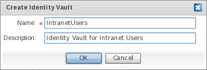
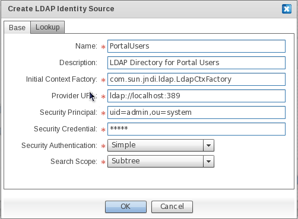
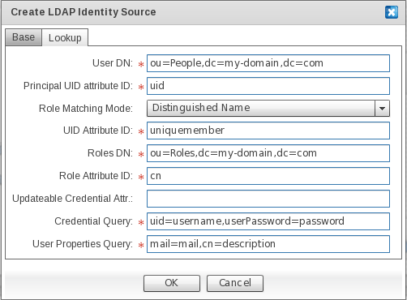
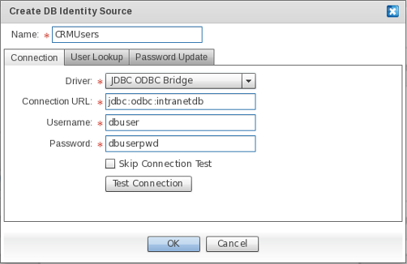
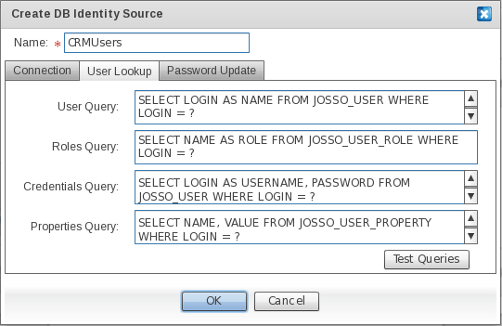
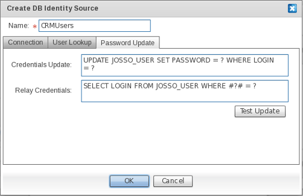
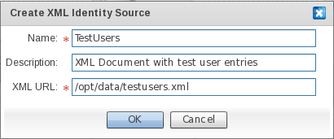

JOSSO.orgCommunity Documentation
TBD: add introduction
An Identity Vault is a type of Identity Source which is built in to the product. The account and entitlement management functionality can only act on ID Vaults instances. The ID Vault is based on an Apache Derby relational database engine. An ID Vault, like any identity source, can be bound to both an Identity Provider (IdP) and a Service Provider (SP). In the former case, the ID Vault is used to back authentication processes. In the latter case, the ID Vault is used to support account linkage, for augmenting IdP-facing claims with those provided by the local ID Vault.
An Identity Vault is represented in the figure below : TODO: insert identity vault figure
Using an ID Vault over a general purpose identity source allows you to leverage the existing visual account and entitlement management facilities, as well as decrease the time to deployment; since the activities involved in setting up an external identity store and linking it to the identity infrastructure are not required.
From the Palette, click "Identity Vault" in the "Identity Sources" drawer.
Click on and drag the "Identity Vault" element to the preferred location within the Diagram Canvas.

On the "New Identity Vault" window, enter the name of the "Identity Vault" element.
Optionally, enter a description for the ID Vault definition that is being created.
LDAP (Lightweight Directory Access Protocol) is a software protocol which enables anyone to locate organizations, individuals and other resources - such as files and devices - in a network, whether on the public Internet or on a corporate Intranet.
An LDAP Identity Source is a type of identity source which can be accessed through the LDAP protocol and which exposes user entries in a hierarchical form, responding to an arbitrary user schema.
TODO: insert identity source figure
LDAP Identity Sources can be bound to both Identity and Service Providers. Connecting an IdP to an LDAP Identity Source implies that queries for retrieving user records to back authentication and related processes will be performed against a directory using the LDAP Procotol. Connecting an SP to an Identity Source implies that queries meant to authenticate users locally, or to augment IdP-facing claims, will be backed by an directory accessible through the LDAP protocol. In order to adapt to arbitrary schemas - and realize schema-agnosticity - the identity source can be customized in terms of the LDAP queries used to access user identity records.
From the Palette, click "LDAP Identity Source" in the "Identity Sources" drawer.
Click on and drag the "LDAP Identity Source" element to the preferred location within the Diagram Canvas.

In the "Create LDAP Identity Source" window, enter the name of the LDAP Identity Source element to be added to the Identity Appliance Diagram.
Field Descriptions
|
Field |
Description |
|
Name |
|
|
Description |
|
|
Initial Context Factory |
The fully qualified class name of the InitialContextFactory implementation. This defaults to the Sun LDAP provider implementation com.sun.jndi.ldap.LdapCtxFactory. |
|
Provider URL |
Enter the LDAP URL for the LDAP Directory Server. This defaults to "ldap://localhost:389", thus expecting a directory server listening on the standard port available in the same server that JOSSO (and the identity appliance) executes. |
|
Security Principal |
Enter the security principal for authenticating the caller to the service. This defaults to "uid=admin,ou=system", the default for OpenLDAP. |
|
Security Credential |
Enter the credential for the security principal that will be passed on to authenticate the caller to the service. The semantics of this field depend on the chosen authentication mechanism, as described below. |
|
Security Authentication |
Determines what authentication mechanism will be used to authenticate the caller to the service. Available options are "None" for anonymous binding, "Simple" for password-based authentication and "Strong" for authenticating using X.509 client certificates. |
|
Search Scope |
Enter the search strategy used to query user and role entries in the target LDAP directory. The default is "Subtree". Setting the search scope to "Base" queries within the specified contexts. Setting the search scope to "One" will cause LDAP queries to search only the immediate children of the LDAP object corresponding to the DN for users and roles. Setting it to "Subtree" will query the entire LDAP directory subtree below the search baseDN for users and roles. TODO: children ? |
On the "Lookup" screen, you can determine how user and role entries are to be retrieved. This is required in order to access identity data responding to arbitrary schemas. The forced migration of user data to a product-specific user schema is avoided, allowing you to re-use existing identity silos independently of user data structure.

|
Field |
Description |
|
User DN |
Enter the Distinguished Name (DN) that will be used as the context for user searches. This defaults to "ou=People,dc=my-domain,dc=com". |
|
Principal UID (User Identity) Attribute ID |
Enter the LDAP attribute name that holds the distinctive identifier of the user. This defaults to "uid". |
|
Role Matching Mode |
Select the mechanism used to obtain the roles for a user. Every mode builds on a specific user attribute to obtain user roles. If "Distinguished Name" is selected, roles will be retrieved by using the DN of the user entry as the key. If "User ID" is selected, roles will be retrieved by using the user identity. If "User Principal" is selected TODO: not sure of this option semantics This defaults to "Distinguished Name". |
|
UID Attribute ID |
Enter the attribute identifier holding the UID. This defaults to "uniquemember". |
|
Role Attribute ID |
Enter the attribute identifier for the role name. This default to "cn". |
|
Updatable Credential Attr (Attribute) |
TDB: explain semantics |
|
Credential Query |
Enter the query used to obtain username and password values from the user entry. The left-hand part represents the LDAP attribute name, while the right-hand one identifies the variable name that holds its value. In this case, "username" identifies the placeholder for the username portion; and "password" identifies the placeholder for the password portion. Both need to be defined in order for the IdP to retrieve the user credentials that are required for authentication. This defaults to uid=username, userPassword=password. |
|
User Properties Query |
Enter the query used to obtain user attributes from the user entry. The left-hand part represents the LDAP attribute name, while the right-hand one identifies the variable name holding its value. In this case, the left-hand portion contains the LDAP attribute name for the user attribute to be extracted, while the right-hand portion holds the property name that will be bound to it. This defaults to mail=mail,cn=description. |
Click on OK to confirm LDAP Identity Source element creation.
Click on Cancel to abort LDAP Identity Source element creation.
RDBMS stands for Relational Database Management System. RDBMS data is structured in database tables, fields and records. Each RDBMS table consists of database table rows. Each database table row consists of one or more database table fields.
An RDBMS Identity Source is a type of identity source which is accessible through the vendor's JDBC (Java Database Connectivity) driver. The JDBC driver hides the internal details of the protocol used to access databases.
TODO: insert identity source figureWithin an RDBMS, user details are stored in database rows grouped using tables. Each single user attribute is stored in table fields. User information might span to more than one table. For instance, user details can be spanned in two different tables: one for holding user attributes and another for holding the related entitlement records.
RDBMS Identity Sources can be bound to both Identity and Service Providers. Connecting an IdP to an RDBMS Identity Source implies that queries for retrieving user records (in order to back authentication and related processes) will be performed against a database using the supplied JDBC driver.
Connecting a Service Provider to an Identity Source implies that queries meant to authenticate users locally, or to augment IdP-facing claims, will be backed by a database made accessible through the supplied JDBC driver.
In order to adapt to arbitrary schemas - and realize schema-agnosticity - the identity source can be customized in terms of the SQL queries that are used to access user identity records.
TBD: mention how to contribute third-party JDBC drivers
From the Palette, click "DB Identity Source" in the "Identity Sources" drawer.
Click on and drag the "DB Identity Source" element to the preferred location within the Diagram Canvas.

In the "Create DB Identity Source" window, enter the name of the DB Identity Source element to be added to the identity appliance diagram.
Field Descriptions
Connection attributes can be specified within the "Connection" screen.
|
Field |
Description |
|
Driver |
The only available option for connecting with a database system, that is allowed from the identity appliance scaffolding wizard, is through a JDBC-ODBC driver. This approach is tailored to a Windows-based system (Open Database Connectivity, or ODBC, is a Windows standard) but it can also be made to work from a Linux host. Upon completion of the scaffolding wizard, a native JDBC (Type 4) driver can be used, in case the RDBMS vendor has not supplied an ODBC driver, or if JOSSO is being hosted in a system running the Unix operating system (e.g. Linux). |
|
Connection URL |
The connection string employed to establish a connection to the target database, in JDBC-ODBC Bridge format. |
|
Username |
The "Username" portion of the credentials set, which will be passed along upon establishment of a connection to the target database. |
|
Password |
The "Password" portion of the credentials set, which will be passed along upon establishment of a connection to the target database. |
|
Skip Connection Test |
Check in case the connection against the database will not be verified. |
|
Test Connection |
Click to verify that JOSSO is able to reach the database using the connection attributes that have been supplied. This avoids "show stopper" issues at execution time which can, for instance, break authentication. |
Within the "User Lookup" tab you can supply the SQL queries that will be used by an Identity Provider to retrieve user credentials and details, as well as roles. Supplying this information is required, since JOSSO is schema-agnostic and therefore requires the directives in order to adapt to an arbitrary schema.

|
Field |
Description |
|
User Query |
SQL query for selecting the record from the table that stores users. If you're employing the reference schema, use the following query : TODO: insert query |
|
Roles Query |
SQL query for selecting the role records for the selected user. If you're employing the reference schema, use the following query : TODO: insert query |
|
Credentials Query |
SQL query for selecting the credential records for the selected user. If you're employing the reference schema, use the following query : TODO: insert query |
|
Properties Query |
SQL query for selecting custom user attributes that will be conveyed as claims in authentication assertions. If you're employing the reference schema, use the following query : TODO: insert query |
|
Test Queries |
Click to make sure that SQL queries are well formed, and will return the expected information. |
Within the "Password Update" screen you can supply the SQL queries employed for self-services, such as password change.

|
Field |
Description |
|
Credentials Update |
SQL update statement for changing user credentials. If you're employing the reference schema, use the following query : TODO: insert query |
|
Relay Credentials |
SQL update statement for updating the credentials backing Remember Me functionality. If you're employing the reference schema, use the following query : TODO: insert query |
|
Test Update |
Click to make sure that update statements are well-formed, and will perform the required changes. |
Click on OK to confirm DB Identity Source element creation.
Click on Cancel to abort DB Identity Source element creation.
XML (Extensible Markup Language) is a flexible way to create common information formats and share both the format and the data on the Internet, intranets, and elsewhere. XML's design goals emphasize simplicity, generality, and Internet usability. Although the design of XML focuses on documents, it is widely used for the representation of arbitrary data structures, for example in Web services. An XML identity source is a type of identity source that is based on a hierarchical information model. The basic building blocks of XML are elements and attributes. Elements describe data, whereas attributes are like the properties of an element, in that they provide further definition of the element. The semantics of XML documents are defined using XML schemas, through which it becomes possible to define the individual elements and attributes, and to assign valid types to them. An XML Identity Source needs to be backed by a single XML document responding to a JOSSO-specific schema. Such a document should be stored in a file system that can be accessed by the JOSSO server. Both user details and entitlement records are stored in a single XML document. User credentials are stored in a separate file due to the sensitive nature of the information. Here's a sample of XML documents, showing user details and entitlement records:
<josso-users>
<users>
<user>
<name>user1</name>
<properties>
<property>
<name>user.name</name>
<value>User 1 Name</value>
</property>
<property>
<name>user.lastName</name>
<value>User 1 Last Name</value>
</property>
<property>
<name>user.registrationDate</name>
<value>2004/09/11</value>
</property>
</properties>
<roles>role1 , role2</roles>
</user>
<user>
<name>user2</name>
<properties>
<property>
<name>user.name</name>
<value>User 2 Name</value>
</property>
<property>
<name>user.lastName</name>
<value>User 2 Last Name</value>
</property>
<property>
<name>user.registrationDate</name>
<value>2004/09/10</value>
</property>
</properties>
<roles>role2</roles>
</user>
<user>
<name>user3</name>
<properties>
<property>
<name>user.name</name>
<value>User 3 Name</value>
</property>
<property>
<name>user.lastName</name>
<value>User 3 Last Name</value>
</property>
<property>
<name>user.registrationDate</name>
<value>2005/01/1</value>
</property>
</properties>
<roles>role1</roles>
</user>
</users>
<roles>
<role>
<name>role1</name>
</role>
<role>
<name>role2</name>
</role>
</roles>
</josso-users>
Here's a sample XML document holding the credential set for the users defined in the previous document :
<josso-credentials>
<credential-set>
<key>user1</key>
<credential>
<name>username</name>
<value>user1</value>
</credential>
<credential>
<name>password</name>
<value>7ea2bd72bfc7dabdfecc0b5760ebcf52</value>
</credential>
<credential>
<name>userCertificate</name>
<value>
-----BEGIN CERTIFICATE-----
MIIDjjCCAvegAwIBAgIBAjANBgkqhkiG9w0BAQQFADCBijELMAkGA1UEBhMCVVMx
DDAKBgNVBAgTA04vQTEMMAoGA1UEBxMDTi9BMRswGQYDVQQKExJKT1NTTyBPcmdh
bmlzYXRpb24xETAPBgNVBAsTCFNlY3VyaXR5MRIwEAYDVQQDEwlqb3Nzby5vcmcx
GzAZBgkqhkiG9w0BCQEWDGNhQGpvc3NvLm9yZzAeFw0wNDExMTExOTQ3MTFaFw0w
NTExMTExOTQ3MTFaMHUxCzAJBgNVBAYTAlVTMQwwCgYDVQQIEwNOL0ExGzAZBgNV
BAoTEkpPU1NPIE9yZ2FuaXNhdGlvbjELMAkGA1UECxMCSVQxDjAMBgNVBAMTBXVz
ZXIxMR4wHAYJKoZIhvcNAQkBFg91c2VyMUBqb3Nzby5vcmcwgZ8wDQYJKoZIhvcN
AQEBBQADgY0AMIGJAoGBAKvwai6JYYycNRHfLyJNMehfUiv9tgEJcejTnsR1AwMS
TFlk95RY09/T7vmDNaWw+aupFVu3yg+UOwc4lrh0nIR74HXbnCwBftyVYnqv0TJu
VwFakOoRuwTnFyUw7WvzLkDzgqddoiua5f4jVpHCAeq8KuCDXmE9v6BUi2QPrbTZ
AgMBAAGjggEWMIIBEjAJBgNVHRMEAjAAMCwGCWCGSAGG+EIBDQQfFh1PcGVuU1NM
IEdlbmVyYXRlZCBDZXJ0aWZpY2F0ZTAdBgNVHQ4EFgQUK9fZV0osJ85BRSQSAIZx
tQZO9oUwgbcGA1UdIwSBrzCBrIAU+L2IUzRQ67GsKyNKdBK7nW5TsDuhgZCkgY0w
gYoxCzAJBgNVBAYTAlVTMQwwCgYDVQQIEwNOL0ExDDAKBgNVBAcTA04vQTEbMBkG
A1UEChMSSk9TU08gT3JnYW5pc2F0aW9uMREwDwYDVQQLEwhTZWN1cml0eTESMBAG
A1UEAxMJam9zc28ub3JnMRswGQYJKoZIhvcNAQkBFgxjYUBqb3Nzby5vcmeCAQAw
DQYJKoZIhvcNAQEEBQADgYEAaWaZypRdY7mZyKGOmJI32ElBlAmyLN+AN3TOMmg2
oi9Pgf7xCGoQ6nsuz52pwPAfL+zhfroCz2ZgY7wMf3BT5dVnZKF97b3KDwMABvTT
5wt3DcNSmhVCQDRkXDoTfclAeMNg7MXSy7E6XWhCwenu2P4llBCktAlclYFEzKkR
sXY=
-----END CERTIFICATE-----</value>
</credential>
</credential-set>
<credential-set>
<key>user2</key>
<credential>
<name>username</name>
<value>user2</value>
</credential>
<credential>
<name>password</name>
<value>3d281d21c49d79f586af2cdc4419b18b</value>
</credential>
</credential-set>
</josso-credentials>
From the Palette, click "XML Identity Source" in the "Identity Sources" drawer.
Click on and drag the XML Identity Source element to the preferred location within the Diagram Canvas.
In the "Create XML Identity Source" window, enter the name of the "XML Identity Source" element to be added to the Identity Appliance Diagram.
You'll need to enter the preferences for retrieving user details and entitlement entries from XML documents.

|
Field |
Description |
|
Name |
The identifier of XML Identity Source. |
|
Description |
A descriptive text for the XML Identity Source. |
|
XML URL |
The absolute location for the XML document holding user and entitlement entries. |